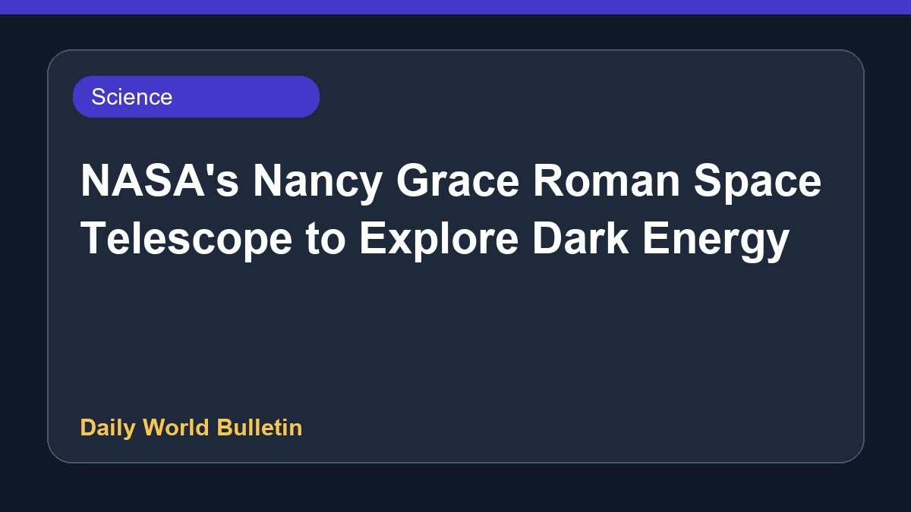
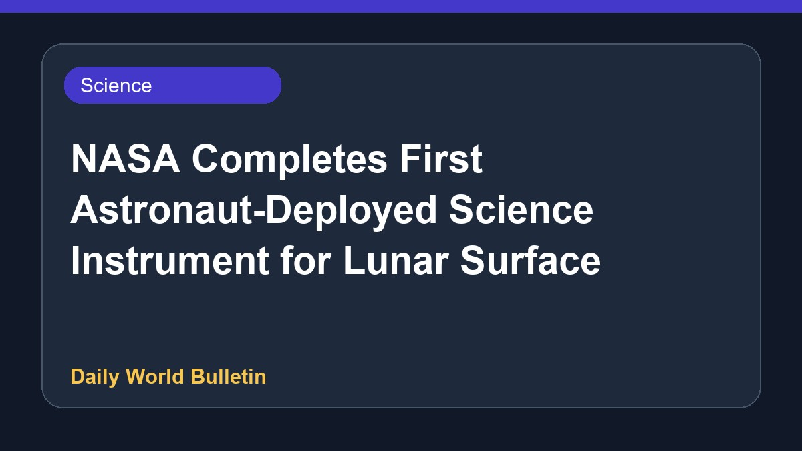

APOD: A Messier Moment for Tempel 2 Featured
The NASA Astronomy Picture of the Day for August 8, 2026, highlights the celestial theme titled 'A Messier Moment for Tempel 2'. The Astronomy Picture of the Day platform showcases a different image or photograph of the universe daily, accompanied by a brief explanation written by professional astronomers to help enthusiasts discover the cosmos. However, further detailed scientific context about this specific feature remains limited based on the currently available feed information.
Original source: NASA
APOD: 2026 August 8 – A Messier Moment for Tempel 2 ↗
APOD: 2026 August 8 – A Messier Moment for Tempel 2 ↗
Related News
 Science
ScienceUK to witness best solar eclipse since 1999 as Moon blocks Sun
 Science
ScienceSevere storms overturn vehicles and cause flooding in Ohio

ScienceNASA's Nancy Grace Roman Space Telescope to Explore Dark Energy

Science